介绍
欢迎使用云映，这是一款快捷实现12306购票工具。本指南将帮助您了解如何使用本软件的所有功能。
安装指南
有两种安装方式：
快速开始
本节将引导您快速了解软件的基本使用方法。
首次运行
启动软件后，您将看到登陆界面：
密码登陆
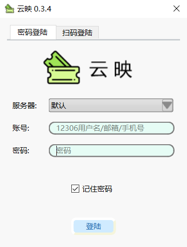图1. 密码登陆界面
- 服务器：选择登陆的服务器，不知道怎么选默认就好
- 用户名：12306注册的用户名、邮箱、手机号
- 密码：12306密码
- 勾选记住密码：密码以加密方式保存在本地，下次打开自动填充
扫码登陆
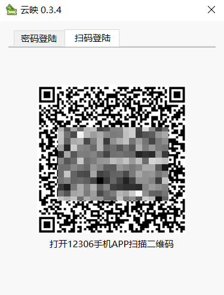>图2. 扫码登陆界面
- 打开12306手机app扫码，点击确认即可完成登陆
图3. 主界面
操作步骤
1：填写出发站，可用简拼、全拼、汉字输入，并从下拉列表中选取车站
2：填写到达站，可用简拼、全拼、汉字输入，并从下拉列表中选取车站
3：选择日期：从下拉日历列表中选择乘车日期
4：查询：可获取到所选日期的从出发站点到到达站点的车次
点击“选择乘车人”按钮，弹出如下对话框
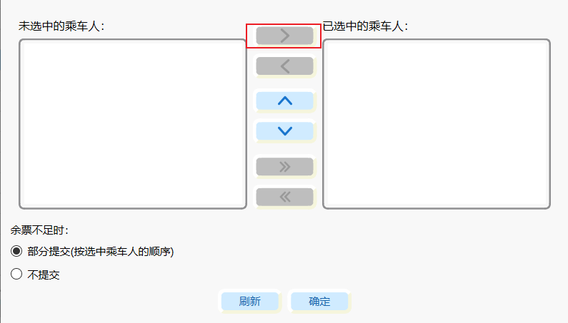图4. 选择乘车人界面
选择左侧乘车人点击向右按钮添加到右侧选中乘车人
部分提交：待提交列车所选席别不足以提交全部所选乘车人时，会尝试选择第二个席别（如果有），如果第二个席席别座位（铺）仍不能满足全部所选乘车人时，只提交席别能满足的乘车人（按乘车人列表的顺序提交，列表前面的先提交）
不提交：待提交列车所选席别不足以提交全部所选乘车人时，不提交本次车次
点击“选择车次”按钮，弹出如下对话框
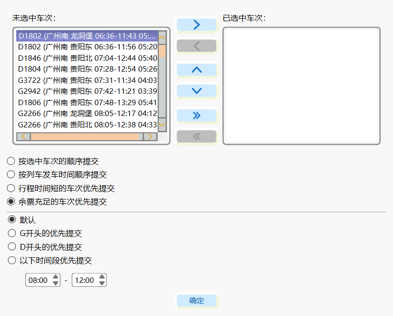图5. 选择车次界面
选择车次有2种方式
-
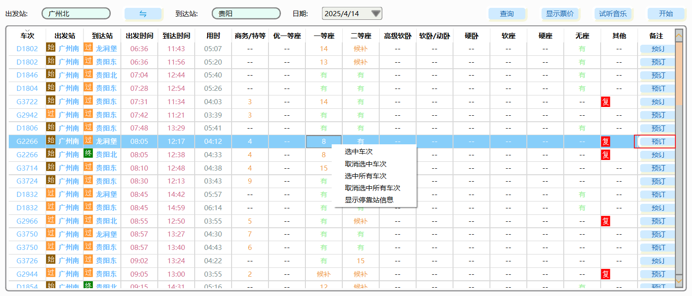
- 在车次列表中点击右键，右键菜单中选择“选中车次”或“选中所有车次”或点击右侧“预订”按钮
- 在图5选择车次对话框中从左侧“未选中车次”移动到“右侧选中车次”
- 按选中的车次顺序提交：按已选中车次列表顺序检索车次，先检索到符合条件（即有票）的先提交，可点击“向上”或“向下”按钮来调整车次的优选顺序
- 按列车发车顺序提交：发车时间在前面的先检索，先检索到符合条件（即有票）的先提交
- 行程时间短的车次优先提交：行程时间短的车次先检索，先检索到符合条件（即有票）的先提交
- 余票充足的车次优先提交（默认）：余票充足的车次（即余票显示为“有”）的车次先提交
- 默认：选择第一个余票充足的车次
- G开头的车次优先提交：在余票充足的条件下，G开头的车次优先提交，如果没有G开头的车次，提交第一个余票充足的车次
- D开头的车次优先提交：在余票充足的条件下，D开头的车次优先提交，如果没有D开头的车次，提交第一个余票充足的车次
- 以下时间段优先提交：先检索指定时间段内的车次，检索到则提交，否则提交第一个余票充足的车次
图6. 选择车次界面
车次提交规则
点击“选择席别”按钮，弹出如下对话框
-
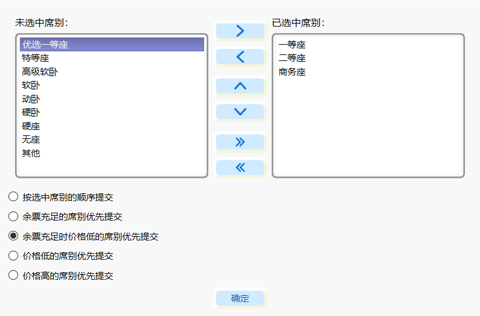
- 在选择车次对话框中从左侧“未选中席别”移动到“右侧选中席别”
- 按选中席别的顺序提交：按已选中席别列表顺序检索席别，先检索到符合条件（即有票）的先提交，可点击“向上”或“向下”按钮来调整席别的优选顺序
- 余票充足的席别优先提交：优选提交检索到的第一个余票充足的席别（即余票显示为“有”）
- 余票充足时价格低的席别优先提交（默认）：同时余票充足的条件下（余票显示为“有”），优先提交价格低的席别，比如同时选了一等座、二等座，并且一等座、二等座同时显示为“有”，则提交二等座
- 价格低的席别优选提交：优先选择价格低的席别（不考虑余票）
- 价格高的席别优选提交：优先选择价格高的席别（不考虑余票）
图7. 选择席别界面
席别提交规则
点击“选座/铺”选项卡，弹出如下界面
- 在下拉框中选择“一等座、二等座、商务座、优选一等座”
- 点击座位图标，图标显示为蓝色即为已选中，再次点击为取消选中
- 点击”清空“按钮可清空所有选座
- 点击选铺选项卡
- 填写“上铺、中铺、下铺”的数量
- 点击”清空“按钮可清空所有选铺
选座
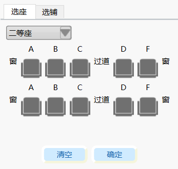图8. 选座界面
选铺
点击“设置”按钮，弹出如下对话框
-
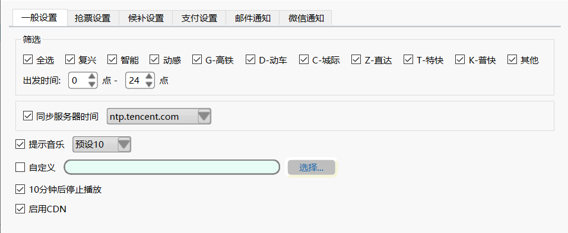
- 车次过滤条件的设置及软件常规设置
图9. 通用设置界面
点击“抢票设置”选项卡，弹出如下界面
-
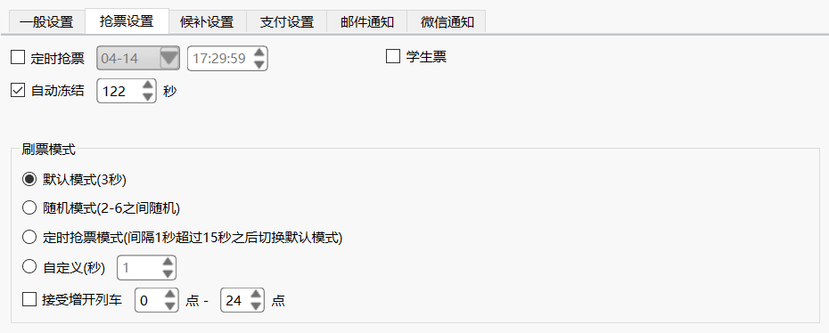
- 定时抢票：在指定的时间开始抢票
- 自动冻结：启用冻结功能后，对于提交失败的车次（余票不足）自动冻结处理，防止由于缓存原因频繁提交无票的车次
- 刷票模式：多种不同的刷票时间间隔切换
图10. 抢票设置界面
点击“候补设置”选项卡，弹出如下界面
-
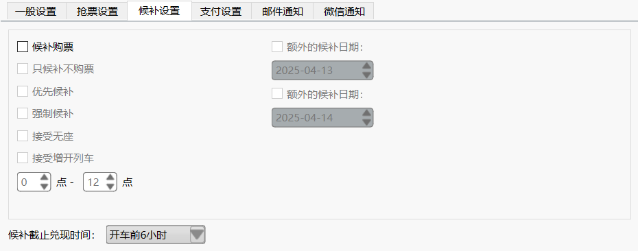
- 候补购票：启用候补功能
- 只候补不购票：只进行候补
- 优选候补：优选提交候补
- 优选候补：即使显示有票也提交候补（避免缓存不刷新问题）
- 接受无座：候补时接受无座
- 接受增开列车：授受指定时间范围内的增开列车
- 额外候补日期：最多选择额外两个候补日期
- 候补兑现截止时间：候补最后的截止时间
图10. 候补设置界面
点击“候补设置”选项卡，弹出如下界面
-
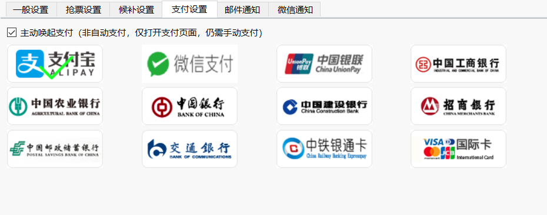
- 主动唤起支付：启用主动支付功能，可选择不同的支付方式
图11. 支付设置界面
点击“邮件通知”选项卡，弹出如下界面
-
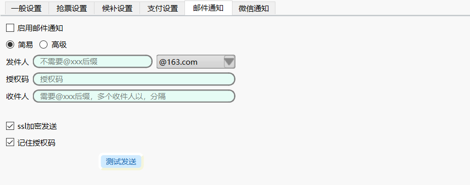
- 启用邮件通知：启用邮件通知功能，分为简易模式跟高级模式
- 发件人：从下拉框中选择邮箱后缀，此时发件人栏不需要填邮箱后缀
- 授权码：邮箱设置的第三方登陆授权码，主流邮箱都支持
- 收件人：收件人邮箱地址，需要带'@'后缀，多个收件人以','分隔（收件人可以与发件人相同，即自己发给自己）
- ssl加密：以加密形式发送邮件
- 记住授权码：保存授权码在本地，方便下次自动填充
- 发件人：发件人邮箱地址，需要填邮箱后缀（@xxx.com）
- 授权码：与简易模式相同
- 收件人：与简易模式相同
- smtp域名：一般为"smtp.xxx.com"（比如smtp.163.com），不懂可以找邮箱提供商
- smtp端口：一般ssl为465，不懂可以找邮箱提供商
- ssl加密：以加密形式发送邮件
- 记住授权码：保存授权码在本地，方便下次自动填充
图12. 邮件通知界面
简易模式
高级模式
点击“微信设置”选项卡，弹出如下界面
-
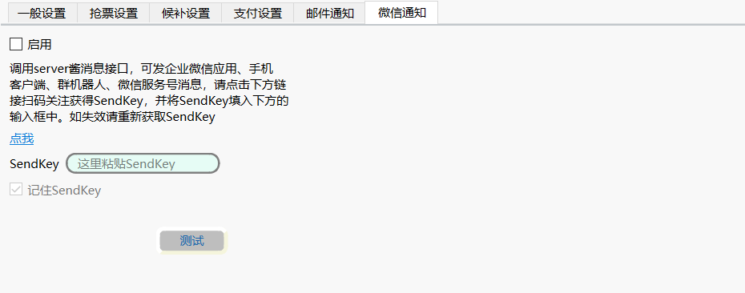
- 启用：此功能为微信公众号通知，需要先关注server酱微信公众号
- 点击‘点我’按钮按照指引操作并把获取到的SendKey粘贴到下方
- 记住SendKey：保存SendKey在本地，方便下次自动填充
图13. 支付设置界面
点击“开始”按钮，确认弹出对话框的信息无误后，点击”是“开始购票/抢票
更新
更新有两种方式：
1.手动更新
前往下载页面手动下载最新版本
2.自动更新
软件启动会自动检查更新，当有新版本可用时，在更新提示对话框选择“是”即可“
关于更新文件的保存位置
更新的的文件会保存在”当前程序位置上一级目录/软件名称_版本号/yuny.exe“，比如当前程序位于”D:\Downloads\yuny_0.3.3\yuny.exe“，则更新的程序位于”D:\Downloads\yuny_0.3.4\yuny.exe“
许可证
本软件遵循GPL v3许可证
常见问题
问题一：如何重置设置？
答：可以通过删除配置文件或使用重置命令来恢复默认设置。
问题二：软件无法启动怎么办？
答：请检查系统日志或尝试重新安装软件。
问题一：软件提示下单成功并且也发送了通知为什么打开12306却发现没有待支付订单？
12306待支付订单目前只会保留10分钟，很可能是你超过了10分钟后才去支付所以没有待支付订单.
问题二：软件使用收费吗？或者有会员功能吗？
软件为免费使用，并且没有会员功能.
问题三：自动冻结是什么意思？
在抢票高峰时期，易出现车次还有余票但提交不了的情况，出现这种情况的原因为缓存过期数据命中，即cdn数据过期了但没有刷新缓存，由于缓存刷新需要一定的间隔，所以你看到的只是无效的数据（过期的）。为了防止软件反复提交过期数据，当发现服务器返回提交失败时，自动将该车次加入冻结列表冻结指定的时间，在冻结的时间间隔内不再重复提交该车次.
问题四：提示设置系统时间失败？
很可能是软件没有修改系统时间的权限，即不是以管理员身份运行.
问题五：可以登陆多个账号吗？
不可以，但可以选多个乘车人.
问题六：该软件跟12306有关系吗？
本软件完全由个人开发，跟12306无任何关系.
联系我们
如果您有任何问题或建议，请通过以下方式联系我们：
- 电子邮件：gethelp@88.com
- 官方网站：http://op9.top